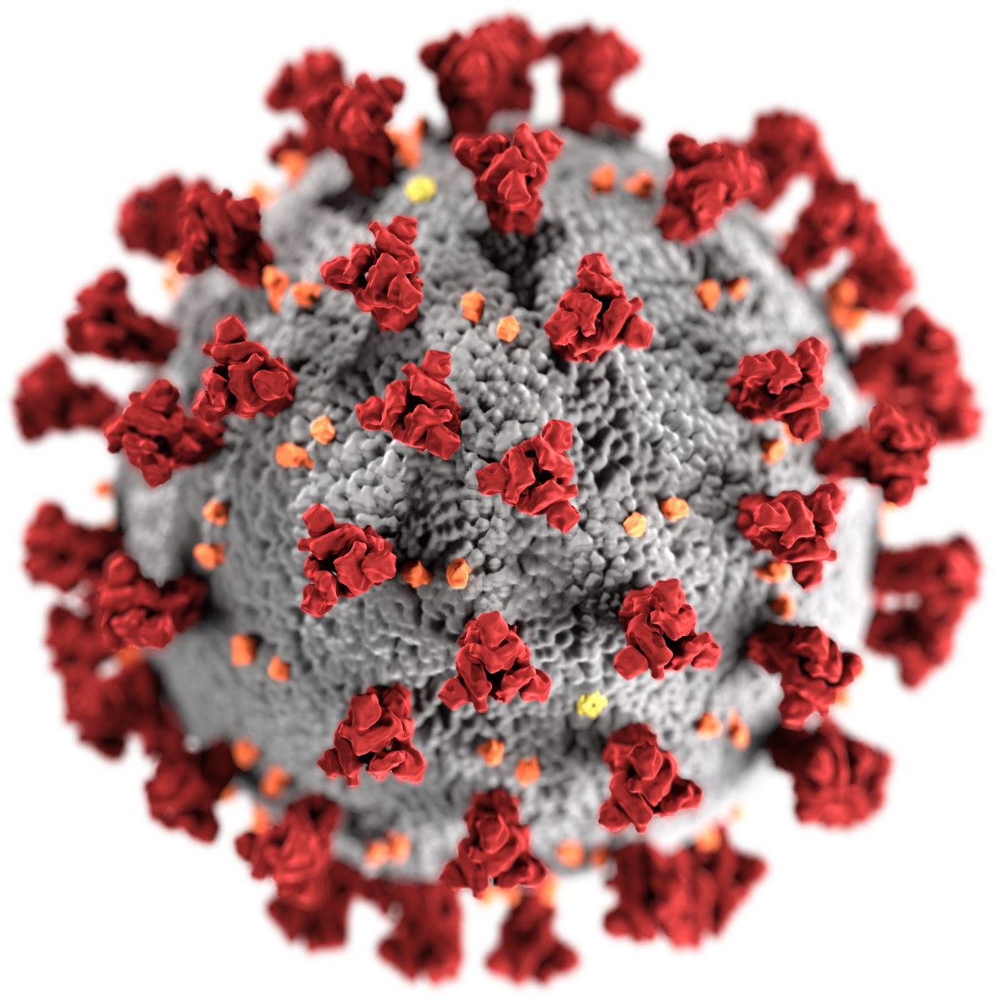

Wie und wann die Covid-19 Epidemie enden wird

Die Welt als Ganzes steht vor einer Herausforderung, wie sie es seit dem zweiten Weltkrieg nicht mehr gegeben hat. Als sich die Meldungen im Januar über eine neue Krankheit häuften, haben die meisten Europäer diese Nachrichten aus China ignoriert. Viele waren damals der Meinung das Covid-19 (die von Sars-CoV-2 ausgelöste Krankheit) nicht schlimmer sei als eine gewöhnliche Grippewelle.
Dass Covid-19 offensichtlich viel bedrohlicher ist, zeigt sich spätestens jetzt. Viele Freiheiten der deutschen Bürger wurden eingeschränkt: Versammlungsfreiheit, Gewerbefreiheit und die Bewegungsfreiheit. Dass diese Maßnahmen getroffen wurden, ist aus epidemiologischer Sicht mehr als richtig, doch wie lange "müssen" wir diese Maßnahmen denn nun durchhalten? Außerdem fragen sich viele, was es damit auf sich hat, dass sich etwa 70% der Bevölkerung infizieren müssen, damit diese Epidemie endet. Diese Fragen und Faktoren werde ich im Folgenden erläutern.
Phasen der Reaktion auf eine Epidemie
Um die Eindämmung einer Epidemie besser verstehen zu können, betrachten wir drei Reaktionen, die ein Staat zu verschiedenen Zeiten treffen kann.Phase Eins: Containment
Die erste Phase, die Containment-Phase, lässt sich bei wenigen Infizierten besonders gut praktizieren. Wie effektiv die Eindämmung durch Containment funktionieren kann, hat uns Südkorea gelehrt. Nachdem die ersten Fälle von Covid-19 diagnostiziert worden waren, begann die südkoreanische Regierung sofort mit weitreichenden Maßnahmen wie Contact-Tracing. Contact-Tracing bezeichnet das Aufspüren, Isolieren und Kontrollieren aller Kontaktpersonen, mit denen ein Infizierter in Kontakt war.
Leider verbreiten sich die meisten Viren exponentiell, da jeder Infizierter wieder mehrere andere Menschen infiziert. Dadurch kommt das Nachverfolgen von Kontakten schnell an seine Grenzen. In der Containment-Phase muss die Bevölkerung als Ganzes nicht isoliert werden, da möglichst alle potentiell Infizierten entdeckt und isoliert werden. Da aber immer wieder Covid-19 Fälle unbemerkt bleiben, sollten in der Containment-Phase keine Großveranstaltungen stattfinden. Denn wenn sich bei einer Veranstaltung mit 10000 Menschen jeder zehnte infizieren würde, kämen die Behörden schnell an die Grenze des Machbaren.
In Deutschland war der Landkreis Heinsberg (Nordrhein-Westfalen) bereits früh ein Hotspot der Infektionen. Die meisten Covid-19-Erkrankungen lassen sich auf eine Karnevallsitzung zurückführen, die bereits am 15.02.2020 stattfand. Nachdem bekannt wurde, dass ein erkranktes Ehepaar an einer solchen Sitzung teilgenommen hatte, hätten sofort alle Bewohner des Landkreises getestet werden müssen und konsequent alle Kontakte nachverfolgt werden müssen. Diese unerwartete Belastung konnte von den Behörden vor Ort nicht gestemmt werden, weshalb sich die Krankheit schnell weiterverbreiten konnte. Auch deutschlandweit hätten zu diesem Zeitpunkt bereits zahlreiche Tests durchgeführt werden müssen, damit lange unentdeckte Infektionsketten bemerkt werden können. Da dies nicht geschehen ist, hat sich die Krankheit schnell weiterverbreitet. Ein weiterer Infektions-Hotspot war in Ischgl (Tirol/Österreich) wo noch bis Mitte März Apres-Ski stattfanden. Viele junge Hamburger waren zu dieser Zeit in den Skiferien in Österreich und haben sich so unbemerkt infiziert. Die Krankheit hatte sich zu diesem Zeitpunkt schon so weit verbreitet, dass die Containment-Phase ohne Handyapps etc. nicht mehr funktionieren konnte.
Phase 2: Delay
Nun begann also Phase II in Deutschland, die Delay-Phase. In der Delay-Phase lautet das Stichwort "Flatten The Curve". Durch Kontaktreduzierungen und die Absage von Großveranstaltungen soll die Verbreitung des Virus verlangsamt werden, da mit einer schnellen Eindämmung nicht mehr zu rechnen ist. In der Delay-Phase sollten besonders Risikogruppen geschützt werden, da diese das Gesundheitssystem überproportional stark belasten würden und es so zum "Einsturz" bringen könnten.
In der Delay-Phase werden bei Bedarf erstmals Maßnahmen getroffen, die alle Bürger betreffen und nicht nur Infizierte. Ein landesweiter Lockdown, wie wir ihn gerade sehen, ist der verzweifelte Versuch des Staates wieder Kontrolle über die Verbreitung von Covid-19 zu erlangen.
Die obige Grafik zeigt den Effekt von Social Distancing: Anstatt eines hohen Peaks, mit dem der Zusammenbruch des Gesundheitssystems, der Einsatz von Kriegsmedizin und eine sehr hohe Zahl an Toten einhergehen, wird die Kurve in die Länge gezogen. Der Gesamtpeak wird kleiner, die Epidemie zieht sich aber deutlich in die Länge.
Phase 3: Mitigation
Wenn auch die Maßnahmen der Delay-Phase nicht greifen oder solche Maßnahmen gar nicht getroffen wurden, schließt sich die dritte und höchste Eskalationsstufe an, die Mitigation-Phase. Mitigation lässt sich mit "Milderung" oder "Abschwächung" übersetzen, was der Begriff aber eigentlich meint, ist Schadenbegrenzung. Diese Maßnahme wird ergriffen, wenn eine Krankheit weit verbreitet ist und nicht mehr gestoppt oder sogar verlangsamt werden kann.
Denn in der dritten Phase geht es vorrangig darum, dass Gesundheitssystem irgendwie vor dem Zusammenbruch zu bewahren und weiterhin Ordnung beizubehalten. Krankenhäuser müssen nicht zwingend-erforderliche Eingriffe verschieben, Intensivbetten aufbauen und schlimmstenfalls die Methoden der Kriegsmedizin anwenden. Falls es mehr beatmungspflichtige Patienten als Beatmungsplätze gibt, müssen Ärzte im Ernstfall das Triage-System anwenden, bei dem vor der Behandlung die Erfolgsaussichten anhand äußerer Faktoren bewertet werden. In dieser Phase werden alle Möglichkeiten ergriffen, um eine weitere Verbreitung der Krankheit zu verhindern. Ein kompletter Shutdown der Wirtschaft und die Reduzierung von Polizei in der Öffentlichkeit wären die letzten Möglichkeiten der Regierung.
Wo wir stehen und wann die Covid-19-Pandemie vorbei ist
Deutschland ist gerade in der zweiten Phase, der Verzögerungsphase. Die beschlossenen Maßnahmen dienen nun vorrangig der Verlangsamung der Verbreitung von Covid-19, nicht der Eindämmung der Krankheit, da es zu viele unentdeckte Infektionskrankheiten gibt. Auf einer Pressekonferenz sagte die Bundeskanzlerin Angela Merkel:
Klar ist: Das Virus ist in Deutschland und in Europa angekommen. Unsere wichtigste Aufgabe besteht jetzt darin, seine Ausbreitung zu verlangsamen.
Angela Merkel, Bundeskanzlerin der Bundesrepublik Deutschland
Aber wann endet eine Epidemie nun und wie lassen sich in der aktuellen Lage möglichst viele Menschenleben retten?
Die Basisreproduktionszahl
Wenn wir uns mit der Verbreitung einer Epidemie befassen, müssen wir uns mit der Zahl von Ansteckungen befassen. Genauer: wie viele Menschen steckt ein Infizierter durchschnittlich an? Diese Zahl nennen wir die Basisreproduktionszahl R0 einer Krankheit. Für die aktuelle Covid-19-Pandemie wird R0 auf etwa zwei bis drei geschätzt. Das heißt: ein Infizierter steckt durchschnittlich zwei bis drei weitere Menschen an.
Neben der Basisreproduktionszahl R0 gibt es die Nettoreproduktionszahl Rt, die auch getroffene Maßnahmen zur Eindämmung der Epidemie berücksichtigt. Das Robert-Koch-Institut schätzt Rt zur Zeit (12.04.2020) auf etwa 1,2. Die getroffenen Maßnahmen scheinen also Wirkung zu zeigen. In den Medien wächst nun immer mehr die Frage, wann die getroffenen Maßnahmen wieder gelockert werden können. Die Antwort auf diese Frage ist sicher nicht einfach und bedarf einer genauen Abwägung zwischen den gesundheitlichen, den gesellschaftlichen und den wirtschaftlichen Folgen. Aus epidemiologischer Sicht lassen sich trotzdem einige Schlüsse ziehen, da die Konsequenzen, die aus der Lockerung von Maßnahmen entstehen, recht gut modellieren lassen.
"Herdenimmunität"
Wie lange müssen wir also noch in Quasi-Quarantäne leben? Wie lange dauern die starken Einschnitte noch?
Eine Epidemie endet genau dann, wenn die sogenannte Herdenimmunität eintritt. Diese kann theoretisch durch Ansteckungen oder durch Impfungen erreicht werden. Die Herdenimmunität für eine Krankheit mit der Basisreproduktionszahl R0 wird erreicht, wenn 1-1/R0 der Menschen infiziert sind. Für R0=3 müssten also 1-1/3=66% der Bevölkerung infiziert sein, damit die Epidemie in Deutschland verschwinden würde.
Eine natürliche Herdenimmunität kann bei Covid-19 in absehbarer nicht erreicht werden, da etwa 50 Millionen in wenigen Jahren infiziert werden müssten, was jegliche Kapazitäten unseres Gesundheitssystems sprengen würde. Daher kann die Herdenimmunität für diese Epidemie nur mit einem Impfstoff erreicht werden. Die Epidemie endet also frühestens in einem Jahr, mit der Veröffentlichung des ersten geprüften Impfstoffs.
Wie soll es weitergehen?
Nachdem nun die dringend notwendigen Lockdown-Maßnahmen getroffen wurden, müssen wir uns natürlich auch die Frage stellen, wie es in Zukunft weitergehen wird. Denn unter den aktuellen Maßnahmen leiden alle: die Menschen, die sich isolieren müssen, und die Betriebe, die schließen müssen. Leider sind diese Maßnahmen aktuell aber notwendig, da die Infektionsketten nicht mehr nachvollzogen werden können. Gerade dies sollte aber unser Ziel sein!
Würden die Quarantäne-Maßnahmen lockern, ohne Alternativen zu etablieren, wären wir innerhalb kürzester Zeit an den Grenzen unseres Gesundheitssystems angelangt. Daher komme ich unweigerlich zu dem folgenden Schluss.
Wir als Gesellschaft werden die beschlossenen Maßnahmen noch mehrere Wochen durchhalten müssen. Denn erst dann, wenn es wenige hundert Neuinfizierte pro Tag gibt, hätten die Maßnahmen ihre Wirkung entfaltet. Denn nur dann, ließe sich Social Tracking durchsetzen und somit die Kontrolle über die Epidemie wiederherstellen. Wenn wir die Maßnahmen zu früh aufheben, wäre diese Zeit der Quarantäne größtenteils verschwendet gewesen, da sofort wieder neue, nicht-kontrollierbare Infektionsketten entstehen würden. Unser langfristiges Ziel muss die Rückkehr zur Containment-Phase sein. Inklusive Social Distancing, Inklusive Händewaschen, Inklusive Anti-Corona-App für alle Bürger.
Zum Schluß möchte ich mich bei allen Menschen bedanken, die unser System am Laufen halten. Vielen Dank, liebe Ärzte, dass ihr euch um uns kümmert. Vielen Dank, liebe Krankenschwestern, dass ihr euch so rührend um uns kümmert. Vielen Dank, liebe Verkäufer, dass ihr trotzdem unsere Versorgung sicherstellt. Vielen Dank an alle, die durch innovative Ideen, Solidarität und Nachbarschaftshilfe unsere Gesellschaft am Laufen halten. Olaf Scholz hat völlig Recht.
"Wir erleben gegenwärtig eine Krise, die in der Geschichte der Bundesrepublik ohne Vorbild ist. Das, was wir jetzt brauchen, ist Solidarität." Olaf Scholz
Ergänzung vom 15.04.2020: Einschätzung der Helmholtz-Gesellchaft
Die Helmholtz-Gemeinschaft hat am 13.04.2020 eine Stellungnahme zur Lockerung von Maßnahmen zur Eindämmung von Covid-19 veröffentlicht. In diesem Papier stellen die Forscher drei Szenarien vor, in denen die geltende Kontaktbeschränkung auf verschiedene Weisen und zu verschiedenen Zeiten gelockert und/oder ergänzt wird.
Szenario 1: Nach der Lockerung der Kontaktbeschränkung steigt die Reproduktionszahl Rt auf einen Wert größer Eins. Die Folgen wären desaströs, die getroffenen Maßnahmen sinnlos. Wir würden vermutlich Bilder sehen, wie wir sie aus Italien kennen. Überfüllte Krankenhäuser, Überlastete Ärzte, Anwendung des Triage-Systems der Kriegsmedizin.
Szenario 2: Die Kontaktbeschränkungen werden beibehalten und die Reproduktionszahl Rt bleibt bei einem Wert um Eins (laut Robert-Koch-Institut liegt Rt aktuell zwischen 1,0 und 1,2). Die Konsequenz wäre, dass die Kontaktbeschränkungen zwei Jahre (bzw. bis zu einem Impfstoff) beibehalten werden müssten, damit sich die Epidemie nicht zu schnell verbreitet. Dieses Szenario wäre desaströs: Massenarbeitslosigkeit und die tiefste Rezession aller Zeiten wären die Folge.
Szenario 3: Die Kontaktbeschränkungen werden drei weitere Wochen beibehalten, dann gelockert und durch neue Maßnahmen begleitet. Dazu zählen: Mehr Covid-19-Tests, Ausweitung des Kontakt-Tracing und konsequente Isolierung aller Infizierten. Außerdem müsse mit Antikörpertests die Durchseuchung der Bevölkerung geprüft werden, damit diese in spätere Berechnungen einfließen können. Dann ließe sich die Epidemie kontrollieren, sodass eine langsame Rückkehr zur Normalität möglich würde. Dieses Szenario ist sicher das angenehmste, da der Shutdown der Wirtschaft in wenigen Wochen gelockert werden könnte und trotzdem die Gesundheit der Menschen nicht zu stark gefährdet werden würde.
Diese Einschätzung unterstützt meine Einschätzung und untermauert sie mit weiteren Modellrechnungen. Die am 15.04.2020 von der Bundesregierung beschlossenen Maßnahmen sind daher als sehr positiv zu bewerten, da sie größtenteils den Maßnahmen des dritten Szenarios entsprechen.